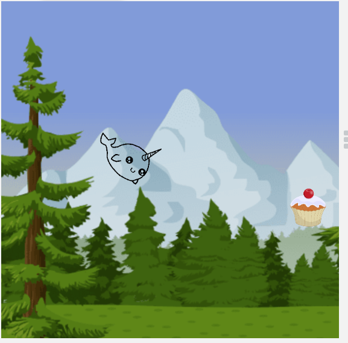
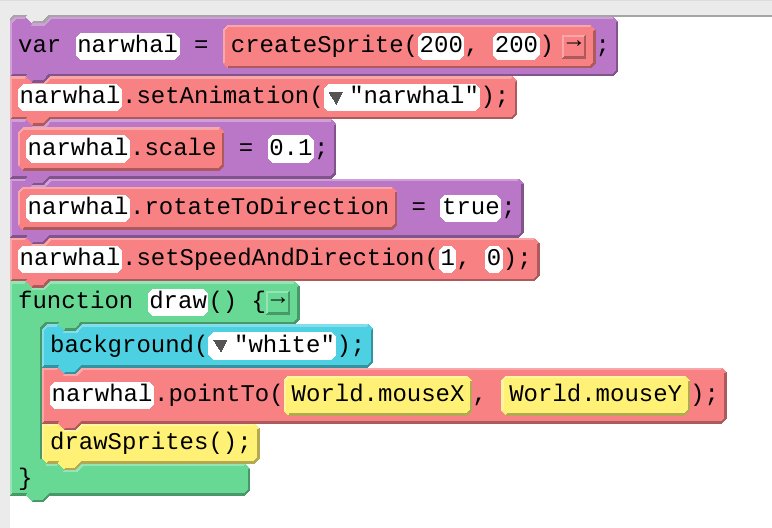
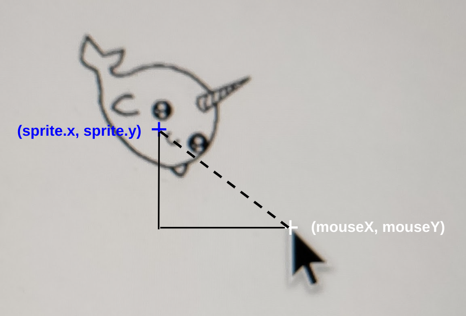
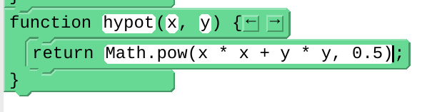
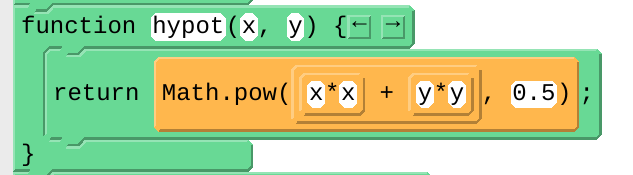
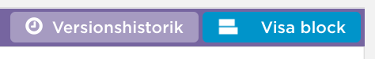
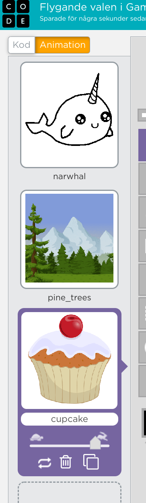
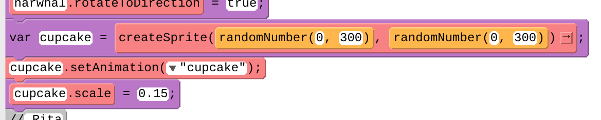
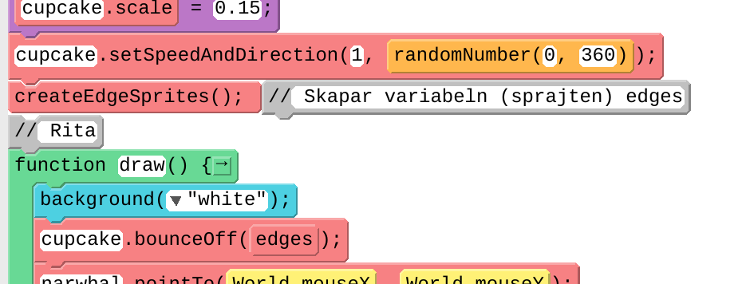

På code.org:s hemsida finns programmeringsmiljön GameLab som är blockprogrammering med programspråket JavaScript.
Vi utgår från Flygande valen. Gör det projektet först, i Scratch, så att du har det färskt i minne!
Sen behöver du ordna ett konto på code.org så att du kan spara och dela ditt nya GameLab-projekt som vi ska göra nu.
Här är min version av spelet som du kan testa: https://studio.code.org/projects/gamelab/8wmRVfcKHVP-5ObbY5NiPG3ISYZEYwuK_F-Xr0af0v4

För att valen ska synas, behöver vi skriva några rader kod. Sprajten behöver skapas och sedan ritas i funktionen draw. Nästan alla program i GameLab kommer att börja så här:

Starta koden med Kör-knappen.
sprite.scale. Dra in blocket och fyll i namn och storlek på sprajten. I mitt fall ser storleken 0.1 bra ut, vilket motsvarar längdskala 10%.

--
Startpositionen har vi redan satt med när vi gör createSprite.
För att valen inte ska hoppa omkring gör vi en kontroll inne i funktionen draw.
GameLab har inget block för att räkna ut avstånd mellan två sprajtar. Vi gör ett eget funktionsblock som vi kallar distance. Vi använder Pythagoras sats/Gougus regel för att räkna ut avståndet mellan en sprajt och en punkt (x, y). Om avståndet till muspekaren är 10 pixlar eller mindre sätter vi hastigheten till 0. Därför behöver vi flytta in narwhal.setSpeedAndDirection in i draw-funktionen.

Nu behöver vi bara funktionen för att räkna ut hypotenusan enligt figuren, alltså den streckade linjen: 
Vi behöver ett sätt att räkna ut hypotenusan i triangeln. Du kan mata in koden så här i blocket return så kommer den sen att visas rätt när du trycker på Enter. 
Så här ser det ut när du tryckt på Enter: 
Visar du det som text ser det ut så här:
function hypot(x, y) {
return Math.pow(x * x + y * y, 0.5);
}
En av styrkorna med GameLab är att man kan byta mellan block och textkod.
Vissa saker kan vara lättare att mata in som textkod.
Du byter genom att klicka på knappen Visa text uppe till höger. Så här ser koden ut nu i textform.

// Förbered
var narwhal = createSprite(200, 200);
narwhal.setAnimation("narwhal");
narwhal.scale = 0.1;
narwhal.rotateToDirection = true;
// Rita
function draw() {
background("white");
narwhal.pointTo(World.mouseX, World.mouseY);
if (distance(narwhal, World.mouseX, World.mouseY) > 10) {
narwhal.setSpeedAndDirection(1, narwhal.getDirection());
} else {
narwhal.setSpeedAndDirection(0, narwhal.getDirection());
}
drawSprites();
}
// Hjälpfunktioner
function distance(sprite, x, y) {
return hypot(x - sprite.x, y - sprite.y);
}
function hypot(x, y) {
return Math.pow(x * x + y * y, 0.5);
}
Sen kan du byta tillbaks till block med knappen Visa block. 
Vi har redan lagt in en vit bakgrund. Du kan lägga in bakgrundssprajt genom att helt enkelt lägga till en sprajt först i din kod. Sprajtarna ritas i den ordning vi skapar dem med createSprite. Vi skapar bakgrunden först, före narvalen. Bilden Pine trees hittar du i AppLabs bibliotek med animeringar.

Detta gjorde vi i steg 9.
Du kan lägga till moln genom att söka på Cloud i animeringsbiblioteket.
Så här kan spelet se ut nu, utan moln.

cupcake.
Vi lägger också till CreateSprite, setAnimation och scale för att få rätt storlek. Vi använder randomNumber för att vår cupcake ska dyka upp på en slumpmässig x- och y-position när den skapas.

Detta gjorde vi i steg 12.
Vi sätter hastigheten på vår cupcake som innan med setSpeedAndDirection. Vi passar också på att sätta en slumpmässig riktning som den startar i.
För att få vår cupcake att studsa vid kanten behöver vi använda createEdgeSprites. Kolla exemplen för det blocket i GameLab: LÄNK. Inne i draw ska vi också komma ihåg att studsa vid kanterna. Så här kan det se ut:

Så här ser hela koden ut nu:
// Förbered
var backgroundSprite = createSprite(200, 200);
backgroundSprite.setAnimation("pine_trees");
var narwhal = createSprite(200, 200);
narwhal.setAnimation("narwhal");
narwhal.scale = 0.1;
narwhal.rotateToDirection = true;
var cupcake = createSprite(randomNumber(0, 300), randomNumber(0, 300));
cupcake.setAnimation("cupcake");
cupcake.scale = 0.15;
cupcake.setSpeedAndDirection(1, randomNumber(0, 360));
createEdgeSprites(); // Skapar variabeln (sprajten) edges
// Rita
function draw() {
background("white");
cupcake.bounceOff(edges);
narwhal.pointTo(World.mouseX, World.mouseY);
if (distance(narwhal, World.mouseX, World.mouseY) > 10) {
narwhal.setSpeedAndDirection(1, narwhal.getDirection());
} else {
narwhal.setSpeedAndDirection(0, narwhal.getDirection());
}
drawSprites();
}
// Hjälpfunktioner
function distance(sprite, x, y) {
return hypot(x - sprite.x, y - sprite.y);
}
function hypot(x, y) {
return Math.pow(x * x + y * y, 0.5);
}
När du startar ett nytt projekt visas en katt som enda sprajt på vit bakgrund. Ta bort katten och rita en egen sprajt som ska vara spelets huvudkaraktär, den flygande valen. Den ska kunna styras med hjälp av muspekaren.
Tryck på lilla soptunnan på lilla kattfiguren nere till höger, så försvinner katt-sprajten ur ditt projekt.

Håll muspekaren över "Välj en sprajt” (katten med det vita plus-tecknet) nere i högra hörnet, så kommer en meny upp. Välj Måla (penseln) i menyn - nu kan du rita en egen ny sprajt. Här får du själv prova dig fram och rita din egen val. Om du hellre vill använda en färdig sprajt ur Scratch sprajtbibliotek, så tryck bara på knappen ”Välj en sprajt” (katten med det vita plus-tecknet).

För att spelet ska bli enklare att spela måste du nu minska storleken på valen. Ändra storleken genom att skriva in 50 i rutan för storlek (finns på höger sida). Välj en ännu mindre storlek om det behövs.

Tryck nu på kod-fliken i översta högra hörnet, så stängs ritverktyget och du kan börja koda. Dra sen ut ett kod-block för HÄNDELSER: "när START (flaggan) klickas på” och lägg ut på kodytan. Under detta block fäster du ett ”för alltid” block som finns under orangea temat KONTROLL. Det här är en LOOP som gör att sprajten fortsätter röra sig hela tiden, om och om igen, så länge programmet är igång.
Inuti den orangea loopen lägger du ett block från RÖRELSE som säger "peka mot muspekare” och under den lägger du i blocket ”gå 10 steg”. Ändra värdet 10 i blocket mot ett värde som du tycker ger lagom hastighet! (Ju högre tal, desto snabbare rör sig sprajten i spelet.)
För att valen alltid ska starta från samma ställe på scenen varje gång spelet går igång, behöver du sätta en startposition. Gör såhär: Dra valen dit du vill ha den på scenen när ditt spel ska starta. Välj från RÖRELSE och dra ut "gå till x: y:” och koppla fast direkt under blocket "när START (flaggan) klickas på", alltså ovanför loopen "för alltd". De värden som står automatiskt efter X och Y är KOORDINATER för den plats där du placerat valen. Du kan alltid ändra om dem om du inte är nöjd.

Tips: För att valen inte ska vända sig upp och ned i spelet, klicka på sprajtens riktning och klicka sen på valet vänster/höger (de två små pilarna i nedre mitten som pekar mot varandra).

Testa ditt projekt! Klicka på START-flaggan. Kan du styra valen med muspekaren? Går den lagom snabbt? Vad händer om du inte rör muspekaren och valen hinner ikapp den? Hur ser det ut? Varför händer det, tror du?
Studsar din val omkring helt tokigt när den kommer nära muspekaren? Du kan förhindra det genom att lägga till blocket "om <> då” som finns under KONTROLL. Blocket för "om <> då” ska då läggas inuti loopen men utanför din kod för rörelsen.
Välj sen två olika block att lägga in från OPERATORER och KÄNNA AV. (Se bilden nedan för hur de ska läggas in i skriptet.) När du är klar ska val-sprajten göra detta:
Om avståndet till muspekare är större än 10 då Peka mot muspekaren och gå
Stå stilla om avståndet är mindre än eller lika med 10.

Testa ditt projekt! Klicka på START. Fungerar det bättre att styra valen nu?
Du ska nu få rita en bakgrund till spelet. Här i exemplet är det en blå himmel, men du får hitta på som du vill. Du behöver inte rita moln på himlen, för det lägger du till som sprajtar. Då kan du välja att programmera dem senare i en av våra utmaningar!
För att ändra bakgrunden trycker du först på SCEN längst till höger och sedan på fliken BAKGRUNDER högst upp i mitten.


Tryck på "Gör till bitmapp". Välj en färg under "Fyll". Tryck på målarburken sedan på bakgrunden för att måla hela bakgrunden med den valda färgen.
Moln gör du som sprajtar. Rita egna med "Måla” eller välj en som redan finns. Sök efter ”Cloud” för att hitta moln. Gör sprajten lagom stor och placera på scenen. Kopiera för flera moln, eller välj två olika moln om du vill!

I spelet ska valen äta munkar som rör sig över himlen. Du ska nu få skapa dessa sprajtar och få dem att röra sig slumpmässigt. Om du inte vill rita egna munkar själv finns det färdiga i Scratch. Du gör en munk-sprajt som du kodar, sen kopierar du den till fler munkar efter att skriptet med dess kod är klart. På så vis slipper du koda om samma sak för vardera munk, det blir enklare. Nu börjar vi:
Rita en egen munk med "Måla” eller välj en färdig som redan finns i Scratch sprajt-bibliotek. Under kategorin "Mat" hittar du en munk, ”Donut”. Ändra sprajtens storlek så den blir lagom stor och placera på en startposition på scenen med valen. Vänta med att kopiera sprajten till efter att du har programmerat den! Du behöver bara en sprajt för alla dina munkar - de blir kopior av varandra.

Då börjar vi koda vår munk. Se till att munk-sprajten är vald, så att du kodar munken och inte valen. Dra sen ut blocket för HÄNDELSER: "när START (flaggan) klickas på” till skriptytan för munk-sprajten. Under start-blocket fäster du sen blocket ”för alltid” från KONTROLL - alltså en loop.
Inuti loopen fäster du nu olika block från RÖRELSE, KONTROLL, KÄNNA AV och även "Operatorer" som säger att sprajten ska:
För alltid
Gå 2 steg
Om den känner av kanten, då ska den...
...slumpmässigt rotera sig mellan -20 till 20 grader
Studsa vid kanten

Tips: Blocket för "slumptal” hittar du under OPERATORER. Du lägger in blocket inuti vita rutan för värdet på ”rotera”-blocket. Skriv in de värden som du vill att skriptet ska slumpa mellan. Prova dig fram vilka värden som blir bra, minusvärde ger vänster och plusvärde är höger!
Testa ditt projekt! Klicka på START. Flyger munken runt på himlen?
Pröva att byta ut värdena för "slumptal” och ”gå”-blocken. Rör sig munken annorlunda? Vad gör "studsa om vid kanten”-blocket? Pröva att ta bort det blocket och se vad som händer!
Nu ska du få valen att äta munken. När valen når fram till en munk och rör den med sin mun så ska munken bli osynlig för att sedan visa sig igen en stund senare igen, så att munkarna aldrig tar slut! Gör såhär:
Se till att din munk-sprajt är vald för att kunna kodas. Dra ut blocket "om <> då" som finns under KONTROLL och lägg det inuti munkens ”för alltid”-loop, direkt inunder det första "om <> då"-blocket. Nu ska du lägga till block så att munken kan KÄNNA AV om den ”rör vid färgen __” som alltså ska vara munnens färg på valen - och rör munken vid munnens färg så ska den bli osynlig under tre sekunder. Skriptet ska då innehålla instruktioner som säger att:
Om rör valen, då ska munk-sprajten:
Gömma sig
Vänta 3 sekunder
Visa sig igen
Se till att färgen i kodblocket "rör vid färgen" är den rätta munfärgen på din val. Det gör du genom att klicka på den runda färgcirkeln i blocket "rör vid färgen" och sen klicka på den lilla pimpetten som kommer fram längst ned i färgväljarmenyn. Klicka sedan på munnen på valen, så ändras färgen i blocket till den rätta.

Lägg till ett block för "visa” även direkt under ”när START klickas på”. Annars kan det bli fel när du startar spelet! När tror du att det kan hända?

Testa ditt projekt! Klicka på START. Försvinner munken när den nuddar vid valen? Spelar det någon roll vilken del av valen som rör vid munken?
Efter att den uppätna munken gömst sig kan du få den att flytta sig till en slumpvis plats på scenen innan den visar sig igen. För det behöver du lägga till ett block för "gå till x: y:” från RÖRELSE och två stycken block ”slumptal 1 till 10” från OPERATORER. Lägg in slump-blocken i de två variabelcirklarna med siffror i det blå blocket, efter x och y. Skriv in munkens nya koordinater: -240 till 240 i den första och -180 till 180 i den andra. Då täcker du hela scenens koordinatsystem.

Testa ditt projekt! Klicka på START. Försvinner munken endast om den nuddar valens mun? Dyker den upp igen på en ny slumpvis vald plats på scenen istället för där den blev uppäten?
Det räcker inte med att bara äta munkar. Du ska kunna samla poäng också! För varje munk som valen äter ska spelet lägga till 1 poäng, och du vill kunna se hur många poäng du har fått.
För att räkna poäng behöver du med kod skapa en VARIABEL. Det kan liknas vid en låda där du lägger i eller tar ur saker. I variabeln lägger du ett värde, t ex en siffra, som kan öka eller minska. Variablen håller reda på hur många saker som ligger i lådan, exempevis hur många poäng du har i ditt spel, en poängräknare. Låter det konstigt? Snart får du se hur det fungerar. Låt oss koda en poängräknare som håller koll på hur många munkar valen ätit upp - ett poäng för vardera munk.
Börja med att skapa ett skript som får munken att skicka ett meddelande när den blir uppäten. Lägg till blocket "skicka meddelande1" från HÄNDELSER och fäst det under det lila ”göm”-blocket. Klicka på texten "meddelande1" i blocket du just lade till och välj "Nytt meddelande". Döp meddelandet till ”jag är uppäten” och tryck OK.


Markera nu SCEN istället för sprajtarna, så du kan lägga kod på scenen istället. Klicka på den lilla bilden av din scens bakgrund nere till höger i Sratch, så väljs scenen. Här gör du ett skript som tar emot meddelandet som den uppätna munken skickar ut. Du vill du tala om för scenen att den ska räkna poäng när munken blir uppäten. För det behöver klicka på skapa en variabel från temat VARIABLER som du döper till "poäng”.

Från "HÄNDELSER tar du ut blocket när jag tar emot meddelande1. Klicka på lilla pilen bredvid "meddelande1" och välj meddelandet med namnet "jag är uppäten", så den tar emot meddelandet från munken.
Från "VARIABLER" drar du ut blocket ”ändra min variabel med 1” och fäst det under ”när jag tar emot "jag är uppäten"”. Klicka på lilla pilen i blocket och ändra till vår skapade variabel som heter poäng, så det blir rätt.
För att nollställa spelets poängräknare vid start gör du ett till skript som säger att "när START (flaggan) klickas på” så ”sätt poäng till 0”.

Nu kan du kopiera munk-sprajten så att du får så många munkar som du vill ha på himlen! Kopiera genom att högerklicka på den lilla bilden av din munk-sprajt under scenen och välj kopiera. Då får du en till likadan munk, med dess kod-skript och allt. Kopiera fram flera munkar tills du är nöjd.
Glöm inte! Du behöver ändra i vardera munk-sprajts startposition för var de ska vara när spelet börjar. Annars börjar alla munkar på exakt samma ställe när spelet börjar.
Om du vill att munkarna ska bli unika och därmed lite olika varandra kan du till exempel:
Ändra munkarnas färger med ritverktyget
Ändra munkarnas storlek, hastighet och riktning
Tips: Om du vill kan du lägga till en ljudeffekt när valen äter upp munken! Från LJUD lägger du in ett block för "starta ljud___" i det skript du nyss gjort. Testa hur det låter. Vill du ändra till annant ljud kan du välja ett nytt i Scratch ljud-bibliotek. Det finner du genom att klicka på fliken som heter LJUD högt uppe till vänster i Scratch. Klicka sedan på den blå knappen Välj ljud i nedre vänstra hörnet. Välj ett ljud du gillar i biblioteket genom att klicka på det. Klicka slutligen på lilla pilen i ditt ljudblock i kodskriptet och välj det nya ljud du just lade till. Då spelas det istället.


För att komma tillbaka till skriptytan där du kan koda igen, så klickar du på fliken KOD i övre vänstra hörnet.

Testa ditt projekt! Klicka på START. Står poängräknaren på 0 när du startar spelet? Ändras poängen när valen äter upp munkar?
Grattis, nu har du gjort färdigt uppgiften.
Döp ditt projekt i rutan högst upp till vänster.
Tryck på DELA i mitten högst upp för att andra ska kunna hitta projektet på Scratch.
Gå ut till projektsidan och låt någon annan testa ditt spel.
Nu är det fritt fram för dig att hitta på helt egna funktioner till ditt spel – eller fortsätta med någon av våra utmaningar:
Tidsgräns för spelet med en tidräknare (VARIABLER)
Minuspoäng för moln
Flera banor - andra figurer än valen?
Munkar i olika hastighet och rörelsemönster
Super-munkar som ger mer än 1 poäng - eller motståndare som ger minuspoäng eller stjäl tid?
En motståndare som åker runt och äter upp munkarna eller som du måste undvika för att inte bli game over?
Vad mer kan du komma på att spelet kan innehålla?
Klicka på spelet nedan för ett testa av en påskinspirerat spel med en tidräknare.

Om du vill att spelet ska vara på tid kan du göra ett skript som avslutar spelet efter ett visst antal sekunder. Hur många munkar hinner valen äta på exempelvis 30 sekunder?
För det behöver du först skapa en ny VARIABEL som du döper till "tid” och som gäller för alla sprajtar. Sedan gör du ett skript för SCEN som talar om att:
Starta när spelet startar
Sätt "tid” till 30
Repetera tills tid < 0
ändra tid med -1
vänta 1 sekund
I spelet SkyWhale ska valen undvika vissa flygande objekt, som bläckfiskar och hårtorkar. Kan du skapa ett skript för att minska poäng, "ändra poäng med -1”, om valen flyger på ett moln?
I spelet SkyWhale kan valen även flyga ut i rymden och ner till en undervattensvärld. Kan du göra ett skript som byter scenens bakgrund när spelaren når en viss poäng – så att ditt spel består av flera banor? Rita flera bakgrundsbilder eller välj ur biblioteket under fliken BAKGRUNDER.
Vad är slumptal och vad kan du använda dem till?
Vad är en variabel?
Vilka två sätt kan du använda för att köra kod när två sprajtar rör vid varandra?